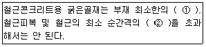
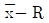
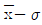
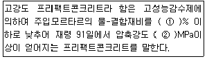
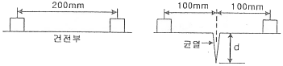
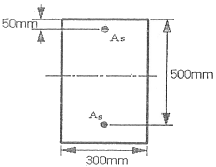
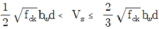

콘크리트산업기사 (2009-03-01 기출문제)
1과목: 콘크리트재료 및 배합
1. 시멘트 모르타르의 압축강도를 측정하기 위하여 표준 모르타르를 제작하고자 할 때 시멘트를 1500g 사용할 경우 표준사의 소요량은?
- 3660g
- 3665g
- 3670g
- 3675g
(정답률: 알수없음)

2. 콘크리트 배합의 보정방법으로 잘못된 것은?
- 모래의 조립률이 클수록 잔골재율도 크게 한다.
- 공기량이 클수록 잔골재율도 크게 한다.
- 물-시멘트비가 클수록 잔골재율도 크게 한다.
- 부순모래를 사용할 경우 잔골재율은 크게 한다.
(정답률: 알수없음)
3. 다음 혼화재료 중 워커빌리티 개선효과가 없는 것은?
- AE제
- 유동화제
- 고성능 감수제
- 방청제
(정답률: 알수없음)
4. 시멘트 비중시험에 대한 내용으로 잘못된 것은?
- 르샤틀리에 비중병의 눈금 1과 0의 위아래에 0.1mL 눈금이 2줄씩 여분으로 새겨져 있다.
- 일정량의 시멘트(포틀랜드 시멘트는 약 64g)를 1g의 정밀도로 달아 칭량한다.
- 동일 시험자가 동일 재료에 대하여 2회 측정한 결과가 ±0.03 이내이어야 한다.
- 광유의 온도가 1℃ 변화하면 용적이 약 0.2cc변화되어 비중은 약 0.02의 차가 생기므로 시멘트를 넣기 전후의 광유의 온도차는 0.2℃를 넘어서는 안된다.
(정답률: 알수없음)
5. 포틀랜드시멘트 제조시 석고를 첨가하는 주된 이유는?
- 시멘트의 조기강도 증진을 위해
- 시멘트의 급격한 응결을 방지하기 위해
- 콘크리트 제조시 유동성 증진을 위해
- 시멘트의 수화열을 조절하기 위해
(정답률: 90%)
6. 콘크리트용 혼합수에 대한 다음 설명중 KS F 4009 레디믹스트 콘크리트 부속서에서 규정하고 있는 내용으로 옳은 것은?
- 하천수는 상수돗물 이외의 물에 대한 품질규정에 적합하지 않으면 사용할 수 없다.
- 회수수의 품질규정은 용해성 증발 잔류물의 양에 대한 상한값을 규정하고 있다.
- 상수돗물, 상수돗물 이외의 물 및 회수수를 혼합하여 사용하는 경우는 시험을 하지 않아도 사용할 수 있다.
- 회수수는 배합보정을 실시하면 슬러지 고형분율에 관계 없이 사용할 수 있다.
(정답률: 알수없음)
7. 혼합시멘트에 대한 설명 중 옳은 것은?
- 플라이애시 시멘트를 사용할 경우 플라이애시의 잠재수 경성 반응에 의해 장기강도가 증가한다.
- 고로시멘트를 사용할 경우 고로슬래그 미분말의 포졸란 활성반응에 의해 수화열이 커지고 장기강도가 증가한다.
- 실리카시멘트를 사용할 경우 실리카 성분의 포졸란 활성반응 효과에 의해 장기강도가 증가한다.
- 고로시멘트를 사용할 경우 고로슬래그 미분말의 볼베어링 효과에 의해 굳지않은 콘크리트의 워커빌리티를 크게 개선시킬 수 있다.
(정답률: 50%)
8. 다음의 혼화제(混和劑)에 관한 기술 중 옳지 않은 것은?
- AE제를 사용한 콘크리트 작업성이 증가하므로 단위수량을 감소시킬 수 있다.
- 공기량은 콘크리트의 조건을 일정하게 하면 공기량 10% 정도 내에서는 AE제의 첨가량에 거의 비례한다.
- 물-시멘트비가 동일한 경우 공기량이 증가하면 압축강도는 감소한다.
- AE제에 의한 AE콘크리트의 최적공기량은 3~5%이며 미세기포가 많을수록 동결융해저항성이 크며 압축강도도 크다.
(정답률: 알수없음)
9. 조립률 2.5, 표면건조포화상태 밀도 2.7g/cm3, 절대건조상태 밀도 2.6g/cm3, 단위용적질량 1,600kg/m3인 잔골재의 실적률은?
- 55.0(%)
- 59.3(%)
- 61.5(%)
- 64.0(%)
(정답률: 알수없음)
10. 아래의 표는 굵은 골재의 최대치수에 관한 규정이다. 괄호 안에 알맞은 것은?

- 1/3, 1/4
- 1/5, 1/4
- 1/3, 3/4
- 1/5, 3/4
(정답률: 10%)
11. 골재에 대한 설명 중 옳지 않은 것은?
- 5mm체에 거의 다 남는 골재 또는 5mm체에 다 남는 골재를 굵은골재라 한다.
- 공사 중에 잔골재의 입도가 변하여 조립률이 최소 ±0.50 이상 차이가 있을 경우에는 배합을 수정하여야 한다.
- 굵은골재는 견고하고, 밀도가 크고, 내구성이 커야 한다.
- 질량비로 90%이상을 통과시키는 체 중에서 최소치수의 체눈의 호칭치수로 나타낸 것을 굵은골재의 최대치수라 한다.
(정답률: 알수없음)
12. 내화구조물의 콘크리트용 골재로서 가장 부적당한 것은?
- 현무암
- 안산암
- 경질응회암
- 화강암
(정답률: 알수없음)
13. 콘크리트의 응결에 관한 다음의 일반적인 설명 중 적당하지 않은 것은?
- 촉진제를 사용하면 응결이 빨라진다.
- 콘크리트 온도가 낮을수록 응결이 지연되는 경향이 있다.
- 슬럼프가 작을수록 응결이 지연되는 경향이 있다.
- 물-시멘트비가 클수록 응결이 지연되는 경향이 있다.
(정답률: 알수없음)
14. KS 관련규격에 따라 콘크리트용 잔골재에 대한 시험을 하고자 할 때, 시험시간이 가장 오래 소요되는 시험항목은? (단, 시험에 필요한 용액은 미리 준비되어 있는 것으로 한다.)
- 흡수율
- 유기불순물
- 염화물함유량
- 안정성
(정답률: 58%)
15. 시방배합결과 단위수량 185kg/m3, 단위잔골재량 750kg/m3, 단위굵은골재량 975kg/m3을 얻었다. 잔골재의 표면수율이 3%, 굵은골재의 표면수율이 2%라면 이를 보정하여 현장배합으로 바꾼 단위수량은?
- 143kg/m3
- 157kg/m3
- 182kg/m3
- 227kg/m3
(정답률: 알수없음)
16. 골재 품질에 관한 다음 설명 중 일반적인 경향으로서 적당하지 않은 것은?
- 둥근 골재는 평평한 골재보다 실적률이 크다.
- 입도가 미세한 골재는 큰 골재보다 조립률이 크다.
- 밀도가 작은 골재는 큰 골재보다 흡수율이 크다.
- 굵은골재의 최대치수가 클수록 단위수량 및 단위시멘트량이 감소한다.
(정답률: 알수없음)
17. KS F 2527(콘크리트용 부순 골재)에서 규정하고 있는 품질 기준 중 부순 굵은골재의 흡수율과 마모율에 대한 규정으로 옳은 것은?
- 흡수율 1%이하, 마모율 30% 이하
- 흡수율 3%이하, 마모율 40% 이하
- 흡수율 5%이하, 마모율 50% 이하
- 흡수율 12%이하, 마모율 60% 이하
(정답률: 알수없음)
18. 어느 레미콘 공장에서 사용 중인 상태의 잔골재 시료 1,080(g)을 채취하여 시험한 결과, 표면건조포화상태의 질량은 1,030(g), 절대건조상태의 질량은 1,000(g)이었다. 이 시료의 흡수율, 표면수율로 옳은 것은?
- 흡수율=3.0(%), 표면수율=4.9(%)
- 흡수율=3.0(%), 표면수율=5.0(%)
- 흡수율=8.0(%), 표면수율=4.9(%)
- 흡수율=8.0(%), 표면수율=5.0(%)
(정답률: 알수없음)
19. 콘크리트의 품질을 개선하기 위해 사용되는 혼화재료는 일반적으로 혼화재와 혼화재로 분류하는데, 분류하는 기준으로 옳은 것은?
- 사용방법
- 사용량
- 혼화재료의 비중
- 사용목적
(정답률: 67%)
20. 콘크리트의 배합에 있어서 단위시멘트량에 관한 일반적인 설명으로 옳지 않은 것은?
- 단위시멘트량이 증가하면 슬럼프가 저하한다.
- 단위시멘트량이 증가하면 수화열이 증가한다.
- 단위시멘트량이 증가하면 강도가 증가한다.
- 단위시멘트량이 증가하면 공기량이 증가한다.
(정답률: 알수없음)
2과목: 콘크리트제조, 시험 및 품질관리
21. 굳은 콘크리트의 성질에 대한 설명 중 틀린 것은?
- 콘크리트의 마모저항성은 물-시멘트비와 골재의 품질에 크게 좌우된다.
- 방사선 차폐를 목적으로 콘크리트를 시공하는 경우에는 콘크리트의 단위용적질량이 큰 것이 유리하다.
- 물-시멘트비가 큰 콘크리트 일수록 백화현상이 발생할 가능성이 높다.
- 물-시멘트비가 큰 콘크리트 일수록 중성화 속도가 느리다.
(정답률: 60%)
22. 시방배합을 현장배합으로 수정할 때 필요한 항목이 아닌 것은?
- 잔골재율
- 골재의 표면수율
- 5mm체에 남는 잔골재량
- 5mm체에 통과하는 굵은골재량
(정답률: 알수없음)
23. AE콘크리트에 관한 다음 사항 중 옳지 않은 것은?
- 단위 잔골재량이 많을수록 공기량은 감소한다.
- AE 공기량은 온도가 높을수록 감소한다.
- AE제를 적절하게 사용하면 콘크리트의 동결융해 저항성이 향상된다.
- 공기량 1% 증가에 대하여 압축강도가 소정의 비율로 감소한다.
(정답률: 알수없음)
24. 공기실 압력법에 의해 굳지 않은 콘크리트의 공기량을 측정하는 경우 적용되는 기본 원리는?
- 아보가드로의 법칙
- 보일의 법칙
- 베르누이의 정리
- 파스칼의 원리
(정답률: 63%)
25. 굳지않은 콘크리트의 성질을 알아보는 시험 방법이 아닌 것은?
- 염화물량 측정 시험
- 공기량 시험
- 슬럼프 시험
- 투수 시험
(정답률: 알수없음)
26. 관리도의 가장 기본이 되는 관리도로써 평균치와 데이터변화를 관리할 수 있고 콘크리트의 압축강도, 슬럼프 공기량등의 특성을 관리하는 데에 편리한 관리도의 명칭은?

관리도
관리도- x 관리도
- P 관리도
(정답률: 82%)
27. 콘크리트 표준시방서에서 정한 재료의 1회 계량분에 대한 계량의 허용오차를 나타낸 것으로 바르지 않은 것은?
- 물 : 1%
- 시멘트 : 1%
- 골재 : 3%
- 혼화제 : 2%
(정답률: 알수없음)
28. 콘크리트 압축강도 시험에 관한 설명으로 올바르지 않은 것은?
- 공시체의 지름은 0.1mm, 높이는 1mm까지 측정한다.
- 공시체의 제작에서 몰드를 떼는 시기는 채우기가 끝나고 나서 16시간 이상 3일 이내로 한다.
- 일반적으로 사용하는 공시체는 원통형 공시체로 직경에 대한 길이의 비가 1:3인 것을 많이 사용한다.
- 콘크리트의 압축강도의 표준은 특별한 경우를 제외하고는 일반적으로 재령 28일을 설계의 표준으로 한다.
(정답률: 알수없음)
29. 단위시멘트량이 300kg/m3, 단위수량이 180kg/m3이고 플라이 애쉬를 100kg/m3 사용하였다면 물-결합재비는 얼마인가?
- 40%
- 45%
- 50%
- 60%
(정답률: 알수없음)
30. 콘크리트의 균열에 대한 기술 중 잘못된 것은?
- 이형철근을 사용하면 균열폭을 줄일 수 있다.
- 인장측에 철근을 잘 배분하면 균열폭을 최소화할 수 있다.
- 철근의 부식정도는 균열폭이 문제가 아니라 균열의 수가 문제이다.
- 콘크리트 표면의 균열폭은 콘크리트 피복두께에 비례한다.
(정답률: 알수없음)
31. 콘크리트의 응력-변형률 곡선에서 탄성계수로 많이 쓰이는 계수는?
- 할선탄성계수
- 접선탄성계수
- 초기 접선탄성계수
- 크리프계수
(정답률: 65%)
32. 블리딩에 대한 설명 중 틀린 것은?
- 블리딩이 많은 콘크리트는 침하량도 많다.
- 블리딩은 굵은 골재와 모르타르, 철근과 콘크리트의 부착력을 저하시킨다.
- 블리딩은 일종의 재료분리이므로 블리딩이 크면 상부의 콘크리트가 다공질이 된다.
- 블리딩이 많으면, 모르타르 부분의 물-시멘트비가 작게 되어 강도가 크게 된다.
(정답률: 알수없음)
33. 콘크리트의 잔골재율에 대한 설명 중 틀린 것은?
- 잔골재율은 소요의 워커빌리티를 얻을 수 있는 범위내에서 단위수량이 최대로 되도록 시험에 의해 정한다.
- 잔골재율이 너무 작으면 콘크리트가 거칠어지고 워커빌리티가 나빠진다.
- 고성능 AE감수제를 사용한 콘크리트의 경우로서 물-시멘트비 및 슬럼프가 같으면, 일반적인 AE감수제를 사용한 콘크리트와 비교하여 잔골재율을 1~2% 정도 크게 하는 것이 좋다.
- 유동화콘크리트의 경우에는 유동화 후 콘크리트의 워커빌리티를 고려하여 잔골재율을 결정할 필요가 있다.
(정답률: 알수없음)
34. 콘크리트의 슬럼프 시험방법에 관한 주의사항으로 잘못된 것은?
- 슬럼프콘에 콘크리트를 채우기 시작해서 벗길 때까지 전 작업을 중단없이 3분 이내에 끝마쳐야 한다.
- 슬럼프 시험시 슬럼프콘에 콘크리트를 채울 때는 슬럼프콘 체적의 1/3씩 3층으로 나누어 채우고 각 층마다 25회씩 다진다.
- 각 층을 다질 때 다짐봉의 다짐 깊이는 그 앞 층에 약 40~50mm 장도 관입되도록 하여 다진다.
- 슬럼프콘을 들어 올리는 시간은 높이 300mm에서 2~3초로 한다.
(정답률: 알수없음)
35. 콘크리트의 워커빌리티에 관한 설명 중 옳지 않은 것은?
- 시멘트량이 많을수록 콘크리트는 워커블하게 된다.
- 온도가 높을수록 슬럼프는 증가되고 슬럼프 감소는 줄어든다.
- 플라이애쉬를 사용하면 워커빌리티가 개선된다.
- 둥근 모양의 천연 모래가 모가진 것이나 편평한 것이 많은 부순 모래에 비하여 워커블한 콘크리트를 얻기 쉽다.
(정답률: 알수없음)
36. 콘크리트 비비기는 미리 정해 둔 비비기시간의 최소 몇배 이상 계속해서는 안되는가?
- 2배
- 3배
- 4배
- 5배
(정답률: 82%)
37. 품질관리의 진행 순서로 옳은 것은?
- 실시(do)→계획(plan)→검토(check)→조치(action)
- 검토(check)→계획(plan)→조치(action)→실시(do)
- 검토(check)→조치(action)→계획(plan)→실시(do)
- 계획(plan)→실시(do)→검토(check)→조치(action)
(정답률: 알수없음)
38. 콘크리트용 잔골재의 조립률(F.M)로서 적정한 것은?
- 1.2~2.3
- 1.6~2.3
- 2.3~3.1
- 3.1~4.8
(정답률: 알수없음)
39. 동결융해 150사이클에서 상대동탄성계수가 60%일 때 동결융해에 대한 내구성 지수는 얼마인가? (단, 시험의 종료는 300사이클로 한다.)
- 100
- 60
- 30
- 15
(정답률: 알수없음)
40. ø100×200mm인 원주형 공시체를 사용한 쪼갬인장강도시험에서 파괴하중이 110kN이면 콘크리트의 쪼갬인장강도는?
- 1.75MPa
- 2.75MPa
- 3.50MPa
- 5.50MPa
(정답률: 알수없음)
3과목: 콘크리트의 시공
41. 콘크리트의 축압에 관한 설명 중 옳지 않은 것은?
- 타설속도가 빠르면 측압이 커진다.
- 단면이 작은 벽보다 단면이 큰 기둥에서 측압이 크다.
- 철근량이 적을수록, 온도가 높을수록 측압이 크다.
- 응결시간이 빠른 시멘트를 사용할수록 측압이 적다.
(정답률: 알수없음)
42. 트레미에 의해 시공을 할 경우, 일반 수중콘크리트의 슬럼프 표준값은?
- 80~130mm
- 130~180mm
- 180~230mm
- 230~250mm
(정답률: 알수없음)
43. 표면마무리에 대한 설명으로 옳은 것은?
- 표면마무리는 내구성, 수밀성에 영향을 주지 않는다.
- 마모를 받는 면의 경우에는 물-시멘트 비를 크게 한다.
- 표면마무리는 콘리트 윗면으로 스며 올라온 물을 처리한 후에 한다.
- 거푸집 제거 후 발생한 콘크리트 표면 균열은 방치해도 좋다.
(정답률: 알수없음)
44. 특정한 입도를 가진 굵은 골재를 거푸집에 채워 넣고, 그 공극속에 특수한 모르터를 적당한 압력으로 주입하여 만든 콘크리트는?
- 프리팩트 콘크리트
- 프리캐스트 콘크리트
- 프리스트레스트 콘크리트
- AE 콘크리트
(정답률: 알수없음)
45. 일반 수중콘크리트의 시공 상 유의사항으로 옳지 않은 것은?
- 물-시멘트비는 50% 이하로 한다.
- 워커빌리티(workability)와 점성이 작아야 한다.
- 단위시멘트량은 370kg/m3 이상으로 한다.
- 타설시 물을 정지시킨 점수 중에서 타설하는 것이 좋다.
(정답률: 알수없음)
46. 일반 콘크리트와 비교한 서중콘크리트의 특성에 대한 설명으로 옳지 않은 것은?
- 목표로 하는 슬럼프를 얻기 위해서는 단위수량이 증가하는 경향이 있다.
- 콘크리트의 온도가 상승하면 공기량이 감소하는 경향이 있다.
- 고온으로 인한 시멘트의 수화반응 촉진과 운반중의 수분증발로 인하여 슬럼프가 감소한다.
- 초기강도 발현이 가속화되므로 장기강도도 증가하는 경향이 있다.
(정답률: 알수없음)
47. 경량골재 콘크리트에 대한 설명으로 옳지 않은 것은?
- 슬럼프 값은 180mm 이하로 한다.
- 골재의 씻기시험에 의하여 손실되는 양은 15%이하로 한다.
- 단위시멘트량은 300kg/m3이상으로 한다.
- 물-시멘트비의 최대값은 60%로 한다.
(정답률: 알수없음)
48. 콘크리트 공장제품에 관한 설명 중 틀린 것은?
- 슬럼프가 10mm이상인 콘크리트에 대해서는 슬럼프 시험을 원칙으로 한다.
- 프리스트레스트 콘크리트 제품의 경우 재생골재를 사용해서는 안된다.
- PS 강재에는 스트럽 또는 가외철근 등을 용접하지 않는 것을 원칙으로 한다.
- 공장제품의 품질관리 및 검사는 실물을 직접 시험함으로써 실시하는 것을 원칙으로 한다.
(정답률: 알수없음)
49. 매스콘크리트에서 균열발생을 제한할 경우에 적용하는 온도균열지수의 범위는? (단, 철근이 배치된 일반적인 구조물의 경우)
- 1.5 이상
- 1.2이상~1.5미만
- 1.0이상~1.2미만
- 0.7이상~1.0미만
(정답률: 알수없음)
50. 수분불분리성 콘크리트를 타설할 때 적정한 수중 낙하 높이는?
- 0.5m이하
- 0.8m이하
- 1.0m이하
- 1.5m이하
(정답률: 82%)
51. 일반 수중콘크리트의 시공에 대한 설명으로 잘못된 것은?
- 콘크리트 면을 가능한 한 수평하게 유지하면서 소정의 높이 또는 수면 상에 이를 때까지 연속해서 타설해야 한다.
- 콘크리트 펌프로 타설하는 경우 타설 도중에는 배관의 선단부분을 이미 타설된 콘크리트 상단에서 0.5~0.8m 이격 시킨다.
- 콘크리트 펌프의 안지름은 0.10~0.15m 정도가 좋다.
- 타설시 완전한 물막이가 어려운 경우에는 유속의 허용 한도를 50mm/s이하를 한다.
(정답률: 알수없음)
52. 매스콘크리트의 수화열 저감을 위하여 사용되는 시멘트가 아닌 것은?
- 중용열포틀랜드시멘트
- 고로슬래그시멘트
- 플라이애쉬시멘트
- 알루미나시멘트
(정답률: 알수없음)
53. 고강도 프리팩트콘크리트의 정의에 대한 아래표의 ()에 알맞은 것은?

- ① 40, ② 40
- ① 40, ② 30
- ① 30, ② 40
- ① 30, ② 30
(정답률: 알수없음)
54. 전단력이 큰 위치에 부득이 시공이음을 설치하려고 한다. 작용하는 전단력에 대하여 철근으로 보강하고자 할 때 가음 중 가장 적합한 정착길이는? (단, 보강에 사용하는 철근은 D32(공칭직경 31.8mm)이다.)
- 160mm
- 320mm
- 480mm
- 640mm
(정답률: 10%)
55. 콘크리트 제품을 제조할 때, 고온 고압 용기에 제품을 넣고 180℃ 전후, 공기압 7~15기압으로 고온고압 처리하는 양생방법은?
- 오토클레이브 양생
- 상압증기양생
- 피막양생
- 전기양생
(정답률: 알수없음)
56. 재령 24시간에서 숏크리트의 초기 압축강도 표준값은?
- 2~5MPa
- 5~10MPa
- 10~15MPa
- 15~20MPa
(정답률: 알수없음)
57. 숏크리트 코어 공시체(ø10×10cm)로부터 채취한 강섬유의 질량이 30.8g이었다. 강섬유 혼입률(부피기준)을 구하면? (단, 강섬유의 단위질량은 7.85g/cm3)이다.)
- 5%
- 3%
- 1%
- 0.5%
(정답률: 알수없음)
58. 연직시공 이음부의 거푸집 제거시키는 콘크리트 타설 후 어느정도 경과한 시점에서 실시하는 것이 좋은가?
- 하절기 4~6시간, 동절기 10~15시간
- 하절기 7~9시간, 동절기 8~10시간
- 하절기 2~3시간, 동절기 7~10시간
- 하절기 1~2시간, 동절기 6~8시간
(정답률: 42%)
59. 서중콘크리트에 대한 설명으로 옳은 것은?
- 하루 최고기온이 25℃를 초과하는 경우 서중콘크리트로서 시공한다.
- 기온 10℃의 상승에 대해 단위수량은 1% 정도 감소한다.
- 목재거푸집의 경우에는 거푸집까지 습윤상태로 하지 않아도 된다.
- 콘크리트를 타설할 때의 콘크리트 온도는 35℃ 이하여야 한다.
(정답률: 알수없음)
60. 해양콘크리트 구조물에서 시공이음을 피해야 할 위치의 기준으로 옳은 것은?
- 만조위로부터 위로 30cm, 간조위로부터 아래로 30cm사이의 감조부분
- 만조위로부터 위로 60cm, 간조위로부터 아래로 60cm사이의 감조부분
- 만조위로부터 위로 90cm, 간조위로부터 아래로 90cm사이의 감조부분
- 만조위로부터 위로 120cm, 간조위로부터 아래로 120cm사이의 감조부분
(정답률: 알수없음)
4과목: 콘크리트 구조 및 유지관리
61. 균열폭 0.2mm 이하의 미세한 결함에 대해 탄성실링제를 이용하여 도막을 형성, 방수성 및 내화성을 확보할 목적으로 사용하는 구조물 보수공법은?
- 표면처리 공법
- 주입공법
- 충전공법
- 침투성 방수제 도포공법
(정답률: 알수없음)
62. 콘크리트 구조물의 철근 부식 상황을 파악하는데 적절하지 않은 방법은 어느 것인가?
- 자연 전위법
- 분극 저항법
- 자분 탐상법
- 전기 저항법
(정답률: 34%)
63. 안전점검의 종류 중 육안관찰이 가능한 개소에 대하여 성능저하나 열화 및 하자의 발생부위 파악을 위해 실시하는 점검은?
- 초기점검
- 정기점검
- 정밀점검
- 긴급 점검
(정답률: 알수없음)
64. 표준적 보강방법 중 상면 두께증설공법의 장점에 대한 설명으로 틀린 것은?
- 일반포장용 기계로 시공이 가능하고 공기가 짧다.
- 상판의 강성이 증가하고, 균열에 대한 저항성이 크게 증가한다.
- 철근을 사용한다면 한층 더 신뢰성있는 상판보강이 이루어진다.
- 일반적으로 섬유보강 제트콘크리트가 이용되어 저가이고 취급도 간단하다.
(정답률: 알수없음)
65. 설계기준항복강도가 400MPa 이하인 이형철근을 사용한 슬래브의 최소 수축ㆍ온도 철근비는 다음 중 어느 것인가?
- 0.0020
- 0.0030
- 0.0035
- 0.0040
(정답률: 알수없음)
66. 외부 케이블을 설치하여 프리스트레스를 도입하는 보강공법의 특징으로 적절하지 못한 것은?
- 부재의 강성을 현저히 향상시키는 효과를 가져온다.
- 보강 효과가 역학적으로 명확하다.
- 보강 후 유지관리가 비교적 쉽다.
- 콘크리트의 강도가 부족하거나 열화가 발생한 경우에는 부적절한 방법이다.
(정답률: 25%)
67. 철근 콘크리트의 휨설계에 대한 기본 가정에 관한 내용으로 틀린 것은?
- 철근과 콘크리트의 변형률은 중립축으로부터의 거리에 비례한다.
- 변형 전에 평면인 단면은 변형 후에도 평면이다.
- 콘크리트 압축연단의 최대 변형률은 0.03으로 본다.
- 콘크리트의 인장강도는 무시한다.
(정답률: 알수없음)
68. 알칼리 골재반응이 일어나기 위해서는 일반적으로 반응의 3조건이 충족되어야 한다. 여기에 해당하지 않는 것은?
- 골재 중의 유해 물질
- 대기중의 이산화탄소
- 시멘트중의 알칼리
- 반응을 촉진하는 수분
(정답률: 알수없음)
69. 보강공법 중에서 강판접착공법의 장점에 대한 설명 중 옳지 않은 것은?
- 접착제의 내구성 및 내피로성이 확실하다.
- 강판을 사용하고 있으므로 모든 방향의 인장력에 대응 할 수 있다.
- 강판의 분포, 배치를 똑같이 할 수 있으므로 균열특성이 좋다.
- 시공이 간단하고, 강판의 제작, 조립 등이 쉬워서 현장 작업이 복잡하지 않다.
(정답률: 알수없음)
70. 철근의 피복두께에 관한 설명으로 틀린 것은?
- 흙에 직접 접하지 않은 현장치기 콘크리트의 보와 기둥의 경우 최소 피복두께는 40mm이다.
- 현장치기 콘크리트의 경우 흙에 직접 접하지 않는 슬래브, 벽체, 장선구조에서 D35를 초과하는 철근의 최소 피복두께는 40mm이다.
- 현장치기 콘크리트의 경우 수중에서 타설되는 콘크리트의 최소 피복두께는 85mm이다.
- 철근의 피복두께를 제한하는 이유는 기후나 기타 외부 요인으로부터 철근을 보호하기 위해서이다.
(정답률: 알수없음)
71. 옹벽 설계시 내적 안정과 외적 안정을 실시하여야 한다. 다음에서 외적 안정에 해당되지 않는 것은?
- 활동
- 전도
- 지반지지력
- 전단
(정답률: 알수없음)
72. 압축이형 철근의 이음에 관한 규정 중 틀린 것은?
- 서로다른 크기의 철근을 압축부에서 겹침이음시 굵은 철근의 겹침이음 길이를 적용한다.
- 겹침이음 길이는 fy가 400MPa 이하인 경우 0.072fydb이상 또한 300mm 이상이어야 한다.
- fck가 21MPa 미만일 경우에는 겹침이음길이를 1/3 증가 시켜야 한다.
- 단부지압이음은 폐쇄 띠철근, 폐쇄 스터럽 또는 나선철근을 배치한 압축부재에서만 사용한다.
(정답률: 알수없음)
73. 균열의 폭을 측정할 수 있는 방법이 아닌 것은?
- 균열스케일
- 균열게이지
- 균열현미경
- 와이어스트레인 게이지
(정답률: 알수없음)
74. 아래 그림과 같이 Tc-To법에 의한 측정균열깊이(d)는 얼마인가? (단, Tc-To법을 사용하며, 측정한 Tc=400㎲, To=250㎲이고, Tc는 균열을 사이에 두고 측정한 전파시간, To는 건전부 표면에서의 전파시간을 나타낸다.)

- 124.9mm
- 157.9mm
- 164.9mm
- 177.9mm
(정답률: 알수없음)
75. 그림의 복철근 단면이 압축부에 3-D22(A's=1161mm2)의 철근과 인장부에 6-D32(As=4765mm2)의 철근을 갖고 있을 때의 등가 압축응력의 깊이(a)는? (단, fck=28MPa, fy=350MPa이다.)

- 290.5mm
- 233.6mm
- 176.7mm
- 56.8mm
(정답률: 34%)
76. 프리스트레스를 도입할 때 일어나는 즉시 손실의 원인으로 옳지 않은 것은?
- 정착장치의 활동
- PS강재와 쉬스사이의 마찰
- PS강재의 릴랙세이션
- 콘크리트의 탄성변형
(정답률: 알수없음)
77. 인장철근 D32(Db=31.8mm)를 정착시키는데 필요한 기본 정착길이(ldb)는? (단, fck=24MPa, fy=400Mpa)
- 1324mm
- 1558mm
- 1672mm
- 1762mm
(정답률: 알수없음)
78. 유효깊이는 600mm이고 폭이 300mm인 보의 전단보강 철근이 부담하는 전단력이

라면, 수직스터럽의 최대 간격은? (단, 강도설계법에 따라 설계한다.)- 600mm
- 300mm
- 150mm
- 125mm
(정답률: 24%)
79. 철근콘크리트 압축부재의 축방향 주철근 배근에 관한 규정 중 틀린 것은?
- 나선철근으로 둘러싸인 철근의 경우는 6개 이상이어야 한다.
- 사각형이나 원형 띠철근으로 둘러싸인 철근의 경우는 4개 이상이어야 한다.
- 비합성 압축부재의 축방향 주철근 단면적은 압축부재 전체단면적의 1~8% 이어야 한다.
- 축방향 주철근이 겹침이음되는 경우의 철근비는 0.⑤이상이어야 한다.
(정답률: 알수없음)
80. 콘크리트 구조 내부의 공동이나 균열과 같은 결함을 조사하는 방법으로 적당하지 않은 것은?
- 초음파법
- 어쿠스틱 에미션(AE)법
- 충격탄성파법
- 반발경도법
(정답률: 28%)
표준 모르타르를 제작하기 위한 시멘트, 모래, 물의 비율은 일반적으로 1:3:0.5 입니다. 따라서 시멘트 1500g을 사용할 경우, 모래와 물의 양은 다음과 같이 계산할 수 있습니다.
모래의 양 = 시멘트의 양 x 3 = 1500g x 3 = 4500g
물의 양 = 모래의 양 x 0.5 = 4500g x 0.5 = 2250g
따라서, 표준 모르타르를 제작하기 위해 필요한 시멘트, 모래, 물의 양은 각각 1500g, 4500g, 2250g 입니다. 이를 모두 더한 값은 8250g 이므로, 정답은 "3675g" 입니다.